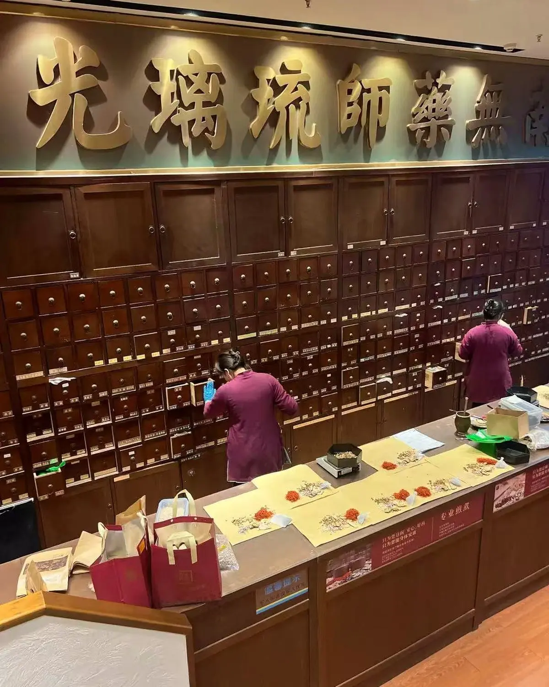
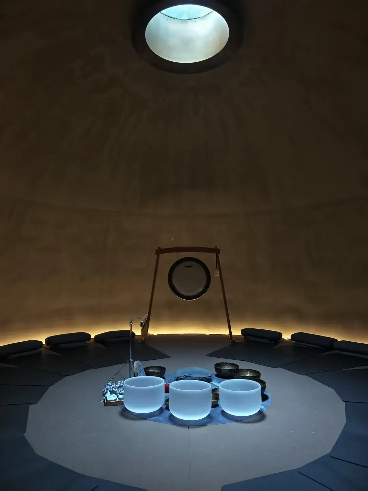
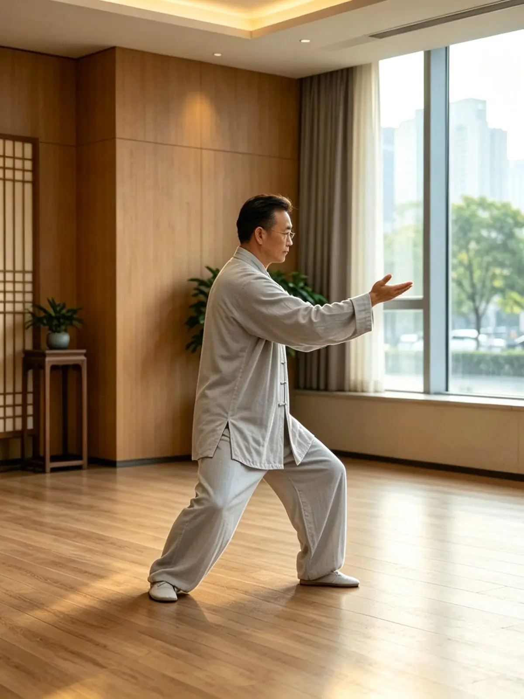
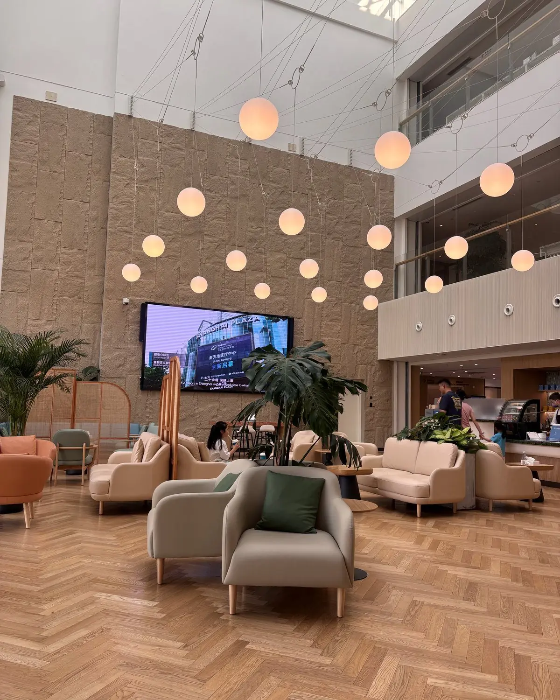

Cultural wellness · Spain
A family's wellness day in Shanghai
A half-day of Chinese medicine and cultural practice, paced so nobody felt rushed.
Read the story →Eastern Restoration · 传统养生
Restore balance through traditional Chinese wellness — bringing body, mind and energy back into harmony. Begin by using Traditional Chinese Medicine to balance the body, then restore the mind and cultivate energy. Gentle, restorative and fully supported in English.
Most guests find a single half-day — TCM paired with one further practice — the most complete way to experience it. A complement to, not a replacement for, conventional care.
Three dimensions of wellness · the practice
The foundation of every journey: a Traditional Chinese Medicine session — consultation and personalised therapy with a licensed physician — to rebalance the body. Explore the full range, from clinical treatment to heritage wellness and facial acupuncture, on our Chinese Medicine page.
Price on request
A sensory healing experience designed to calm the mind and release deep tension — quiet practices that bring you fully into the present.
Price on request
Gentle traditional Chinese movement that cultivates internal energy and vitality — easy to learn, and good for body and mind alike.
Price on request
We recommend pairing Balance the Body with one further practice in a single half-day — see the curated journeys below.
02 · Restore the Mind
A sensory healing experience to calm a busy mind and let deep tension go. Settle in, slow your breath, and let sound, scent and ritual do the rest.
You can choose:
60–90 min · price on request

03 · Cultivate Energy
Traditional Chinese movement that cultivates internal energy and vitality — slow, mindful and surprisingly grounding. No experience needed, and gentle enough for any age.
You can choose:
45–60 min · price on request

Curated half-day journeys · signature
Our most representative way to experience Eastern Restoration: TCM to balance the body, paired with either stillness of mind or movement of energy, across a gently paced half-day.
Pricing depends on the practices you choose, group size and venue — we’ll quote for your plans, and confirm every cost with you before anything is arranged.
Good to know
Yes. Every session is fully supported in English — either led directly in English, or guided by a Chinese-speaking host with a dedicated English coordinator alongside you.
No. Eastern Restoration is a restorative, cultural experience designed for balance and wellbeing — it complements rather than replaces conventional medical care. Where a session includes TCM elements such as acupuncture, those are delivered by a licensed physician in a compliant setting.
Most guests choose a curated half-day that pairs TCM to balance the body with one further practice — mind restoration or energy cultivation — for a more complete experience.
None at all. Every practice is gentle and suitable for complete beginners and all ages, guided step by step at your own pace.
Yes. The mind and energy practices in particular work beautifully as shared sessions for couples, families and small groups.
Tell us how you'd like to feel and who's coming — we'll shape the right practice and reply on WhatsApp.
Plan your visit on WhatsAppGuest stories

Cultural wellness · Spain
A half-day of Chinese medicine and cultural practice, paced so nobody felt rushed.
Read the story →
Family · Philippines
Back-to-back consultations so the family could stay together throughout.
Read the story →Short films from real visits — treatments, consultations and the places we take our guests.